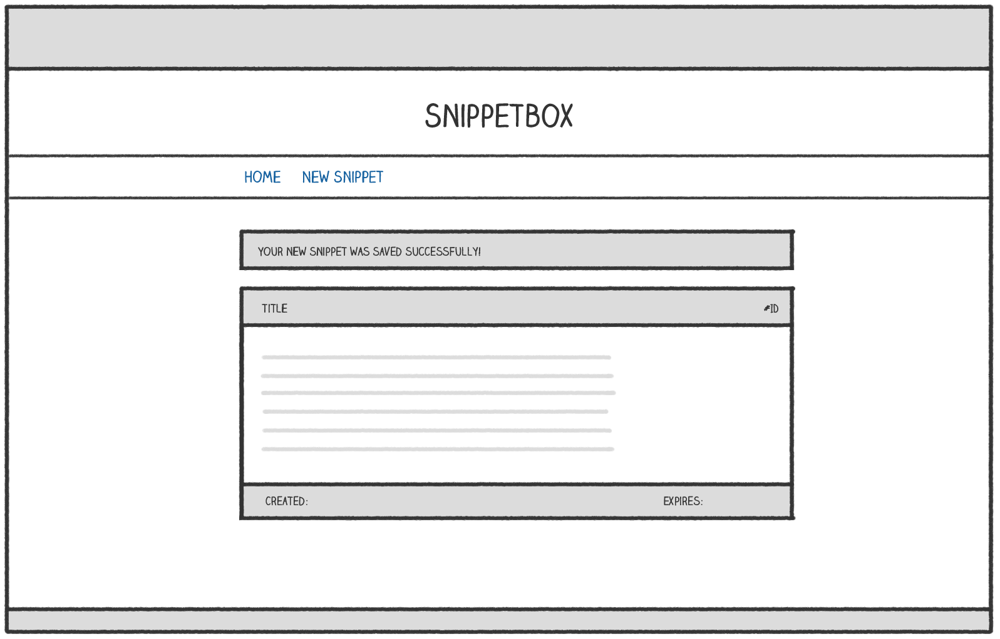

Stateful HTTP
A nice touch to improve our user experience would be to display a one-time confirmation message which the user sees after they’ve added a new snippet. Like so:
사용자 경험을 개선하기 위한 좋은 방법은 사용자가 새로운 Snippet을 추가한 후에 보는 일회성 확인 메시지를 표시하는 것입니다

A confirmation message like this should only show up for the user once (immediately after creating the snippet) and no other users should ever see the message. If you’ve been programming for a while already, you might know this type of functionality as a flash message or a toast.
이와 같은 확인 메시지는 사용자에게 한 번만 표시되어야 하며(Snippet을 만든 직후에 즉시), 다른 사용자는 이 메시지를 볼 수 없어야 합니다. 이미 프로그래밍을 한 적이 있다면, 이러한 유형의 기능을 flash message 또는 toast로 알고 있을 것입니다.
To make this work, we need to start sharing data (or state) between HTTP requests for the same user. The most common way to do that is to implement a session for the user.
이를 작동시키기 위해서는 동일한 사용자의 HTTP 요청 간에 데이터(또는 상태)를 공유해야 합니다. 이를 위한 가장 일반적인 방법은 사용자를 위한 세션을 구현하는 것입니다
In this section you’ll learn:
- What session managers are available to help us implement sessions in Go.
Go에서 세션을 구현하는 데 도움이 되는 세션 관리자는 무엇이 있을까요? - How to use sessions to safely and securely share data between requests for a particular user.
특정 사용자의 요청 간에 데이터를 안전하고 안전하게 공유하기 위해 세션을 사용하는 방법 - How you can customize session behavior (including timeouts and cookie settings) based on your application’s needs.
세션 동작을 (타임아웃 및 쿠키 설정 포함) 응용 프로그램의 요구 사항에 기반하여 사용자 정의하는 방법